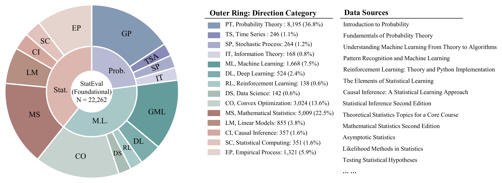
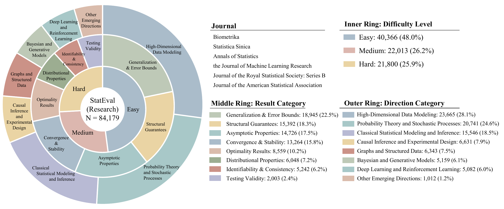
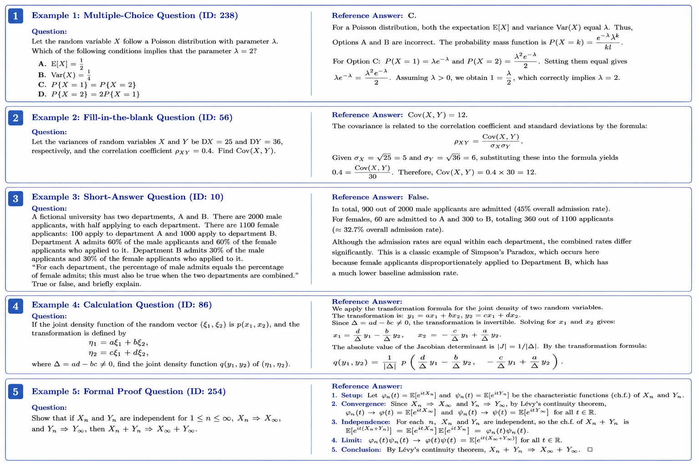
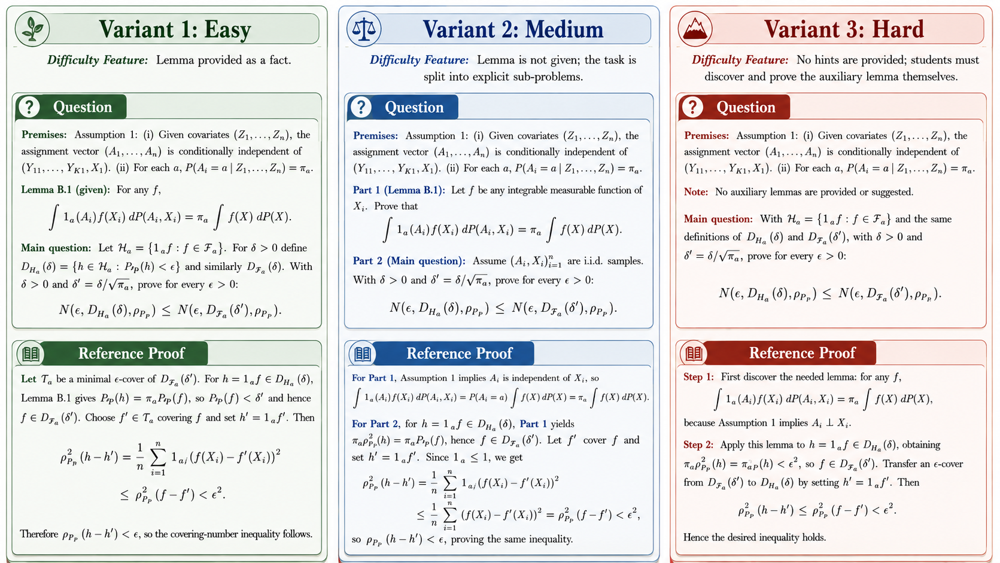
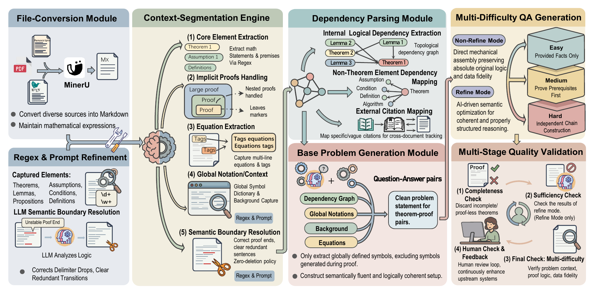
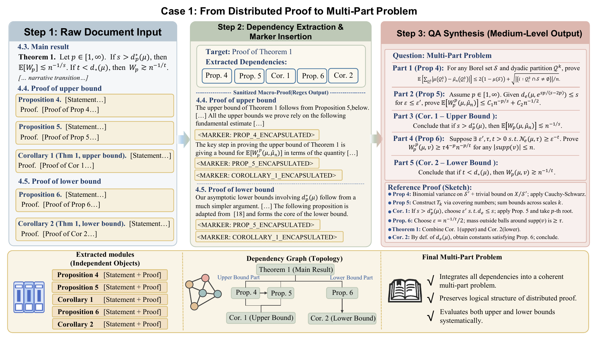
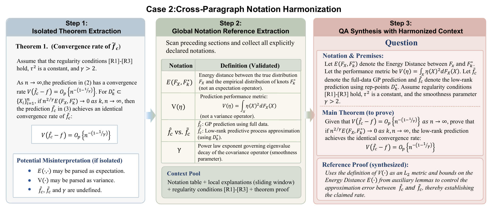
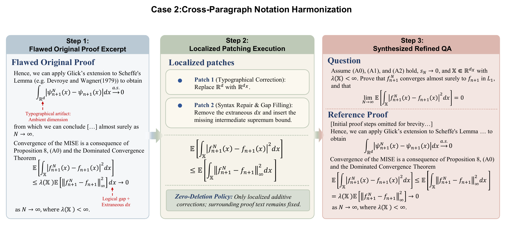
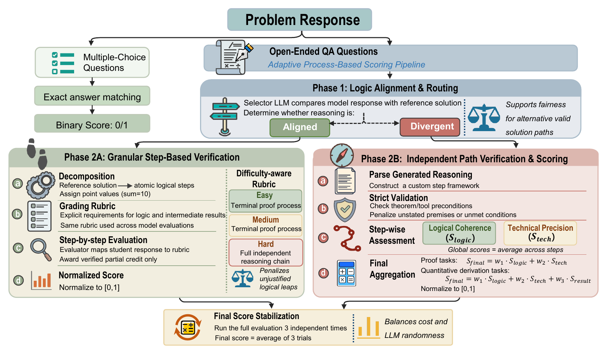
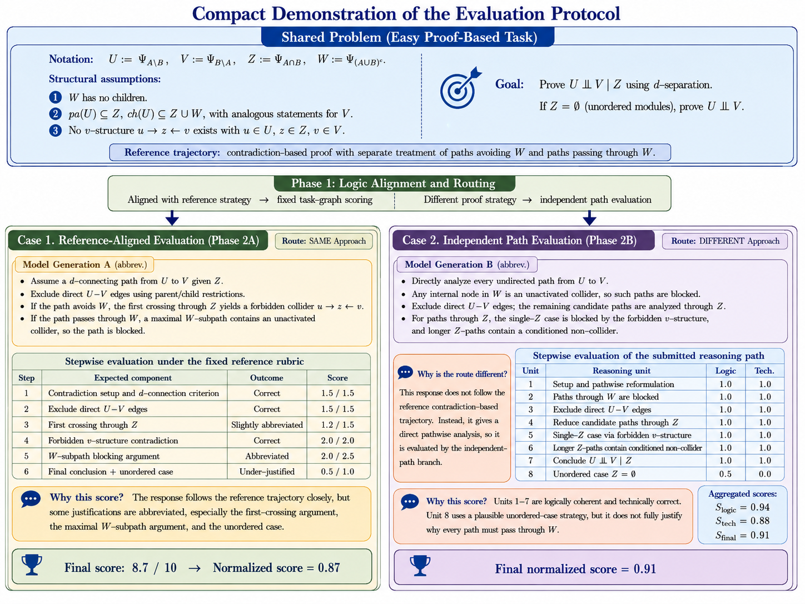

Comprehensive Evaluation Leaderboard
Latest results from StatEval-mini, covering foundational statistical knowledge and research-level proof reasoning.
| Rank | Model | Grad Prob. | Grad Stat. | Grad ML | Grad Mean | Undergrad Prob. | Undergrad Stat. | Undergrad ML | Undergrad Mean | Overall |
|---|
Scores are percentages. Foundational tasks include multiple-choice, short-answer, calculation, fill-in-the-blank, and proof-based problems.
Benchmark Structure
StatEval is organized along two axes: difficulty level and statistical discipline.
Foundational Knowledge Dataset
- 22,262 problems from 76 textbooks, exams, course materials, and online resources.
- 9,382 undergraduate and 12,880 graduate-level instances.
- Probability, Statistics, and Machine Learning, with more detailed course-level subdomains.
Statistical Research Dataset
- 84,179 proof-based tasks from 6,953 articles published between 2000 and 2025.
- Six top-tier statistical and machine learning journals.
- Easy, Medium, and Hard variants generated from theorem dependency structures.



Problem Examples
Examples are included to make the benchmark format concrete, especially the difference between routine statistical exercises and research-level theorem reasoning.
Foundational tasks
Textbook-style questions test statistical definitions, calculations, modeling judgment, and proof-based reasoning across undergraduate and graduate curricula.
Research Easy
Prerequisite theorems or lemmas are provided as facts, so the model focuses on proving the target result.
Research Medium and Hard
Medium requires proving prerequisites before the main result; Hard removes prerequisite hints and requires building the proof chain independently.


TRACE Data Processing Pipeline
TRACE combines deterministic structural extraction with LLM-based semantic validation to convert unstructured statistical papers into self-contained theorem-level reasoning tasks.
1. Convert and segment
PDFs are normalized into structured Markdown, then theorems, assumptions, equations, and proofs are isolated with context-aware markers.
2. Harmonize notation
Document-level notation and surrounding assumptions are consolidated so each extracted problem remains self-contained.
3. Build dependencies
Prerequisite theorems, lemmas, definitions, and equations are organized into a topological dependency graph.
4. Generate difficulties
Easy, Medium, and Hard variants are synthesized by changing how much dependency information is provided.
5. Patch carefully
Context-Aware Patching resolves local OCR artifacts or missing intermediate steps under a Zero-Deletion Policy.
6. Validate quality
Completeness, sufficiency, and consistency checks are followed by human expert review on sampled cases.




Adaptive Evaluation Protocol
Multiple-choice questions are graded by exact matching, while open-ended statistical derivations are scored through an adaptive process-based pipeline.
Logic alignment
A selector model routes each response according to whether it follows the reference proof strategy or uses a divergent but potentially valid path.
Reference-based scoring
Aligned solutions are mapped onto atomic proof steps and receive normalized partial credit for completed logical components.
Independent verification
Divergent solutions are judged by logical coherence, technical precision, and terminal accuracy when applicable.

